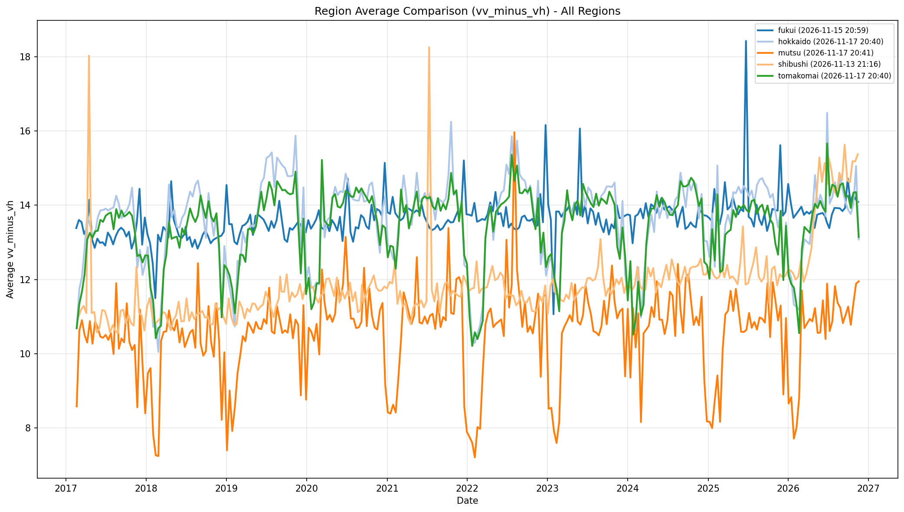
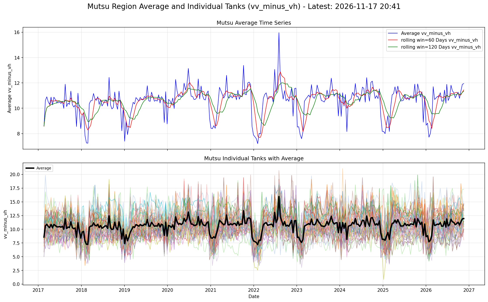
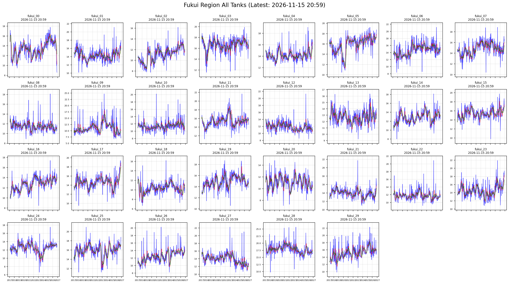
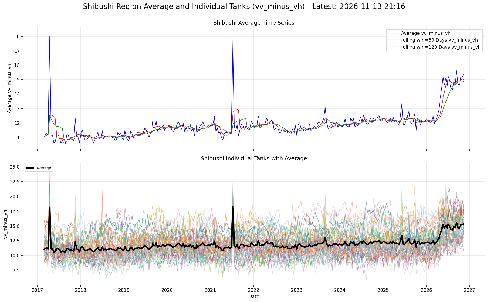

このダッシュボードは、Sentinel-1衛星のSARレーダー波形をリアルタイムに解析し、タンクの液面変化を監視する実験的なプロジェクトです。以下のチャートとAIレポートは、最新の観測データとGoogle検索からの情報を組み合わせて生成されたものです。
OSSプロジェクトのGitHubリポジトリ: https://github.com/rohiniku/s1-tank-monitor
※本レポートは、宇宙からのレーダー波形を自律的に読み解いたAIが、今朝のGoogle検索ニュースとリアルタイムに結合して自動生成した実験用ファクトチェック報告です。
・shibushi基地では、2026年4月以降、VV偏波のデシベル値が過去の平均的なベースライン（約0～0.5dB）を著しく上回り、直近データは2.45dBである。これは、石油タンクの屋根が継続的に上昇し、在庫が増加傾向にある物理的変化を示す。 ・shibushi基地におけるVV偏波の持続的な高値は、在庫が満タンに近い状態を維持していることを示唆しており、今後の払い出し動向に注意が必要である。
・志布志基地では、2026年4月以降、VV/VH偏波が顕著かつ持続的に上昇しており、これは原油在庫の大幅な増加を示唆している。 ・志布志基地は2026年3月と5月の国家備蓄放出対象と報じられたが、SARデータは同時期以降に在庫が大幅に増加しており、報道内容と物理データに矛盾が見られる。 ・苫小牧東部基地は2026年3月と5月の国家備蓄放出対象と報じられたが、SARデータは放出を示す明確な在庫減少トレンドを示しておらず、迅速な補充があったか、放出量がSARで捉えにくい規模であった可能性がある。 ・国家備蓄放出が報じられた基地で在庫増加や減少が不明瞭なことは、備蓄放出の実態把握や、代替調達・補充の状況に関する透明性の欠如を示唆する。
・鹿島基地のVV/VH偏波は2026年に入り顕著な上昇傾向を示し、5月にはピークを迎え、その後も高水準を維持しており、在庫が潤沢であることを示唆している。他の主要基地も長期移動平均線を維持し、全体として安全水域にある。 ・ホルムズ海峡では米イラン間の緊張が継続し、タンカー攻撃や機雷接触が頻発、海上輸送が混乱。日本はサウジとの共同備蓄を3倍に増強し、エネルギー安全保障を強化している。 ・ホルムズ海峡における米イラン間の軍事衝突のさらなる激化や、タンカー攻撃の頻発・大規模化は、原油供給の物理的途絶を招き、日本のエネルギー安全保障に直接的な脅威をもたらす。
📊 最新の幾何アライメント済・移動平均観測チャート
（※画像上でダブルタップまたはピンチアウトすることで、ブラウザ標準の滑らかなズーム操作が可能です）







